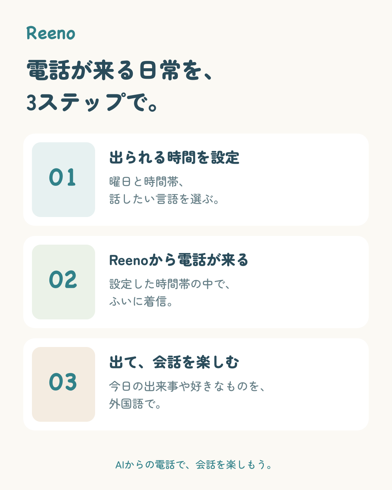
使い方の3ステップ
設定して、電話を待って、おしゃべり。アプリの流れを1枚に。

REENO / 投稿用素材
Reenoの紹介に使える画像と動画を集めました。
好きな素材を選んで、スマホから1点ずつ保存できます。
投稿に合わせた素材の改変・加工もOKです。トリミングや文字入れ、動画編集など、自由にアレンジしてお使いください。
画像 27 点 / 動画 4 点PNG・MP4個別ダウンロード
保存先やメニュー名は端末・ブラウザで異なります。透過画像のプレビューにある市松模様や背景色は、保存する画像には含まれません。
01 / 紹介画像
Reenoの楽しみ方と、電話の向こうの仲間たちを伝える画像です。

設定して、電話を待って、おしゃべり。アプリの流れを1枚に。
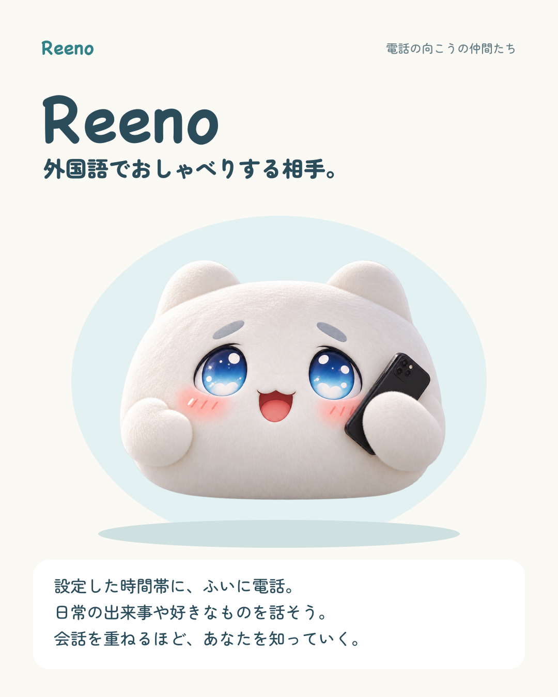
外国語でおしゃべりする相手、Reenoの紹介に。

会話の相談は、日本語でOK。その安心感を伝える1枚。
02 / 着信
実際の着信画面と、Reenoから電話が届く雰囲気を伝える紹介用イメージです。
iPhoneに届いたReenoの着信。動画は静止画から文字の光の動きを再現したもので、iPhoneの着信音「Reflection」付きです。
スマホを使っているとき、画面上部に届く着信の表示例。動画はこの静止画にiPhoneの着信音「Reflection」を付けたものです。
星空を背景に、Reenoからの電話を待つ雰囲気を伝える1枚。アプリの通話画面を撮影用にアレンジしたもので、実際の着信画面とは異なります。動画はiPhoneの着信音「Reflection」付きです。
青空と雲を背景に、Reenoからの電話を明るく紹介する1枚。アプリの通話画面を撮影用にアレンジしたもので、実際の着信画面とは異なります。動画はiPhoneの着信音「Reflection」付きです。
03 / 通話
Reenoとの会話や、Mentaへの相談中のアプリ画面です。
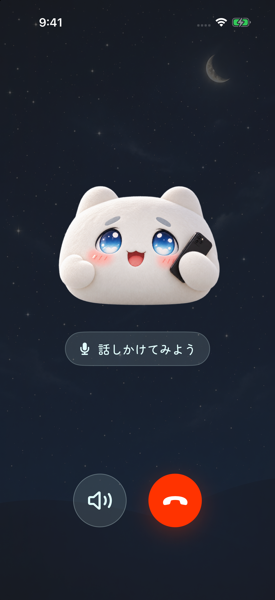
外国語で会話を楽しむReenoの通話画面。サンプル表示のスクリーンショットです。
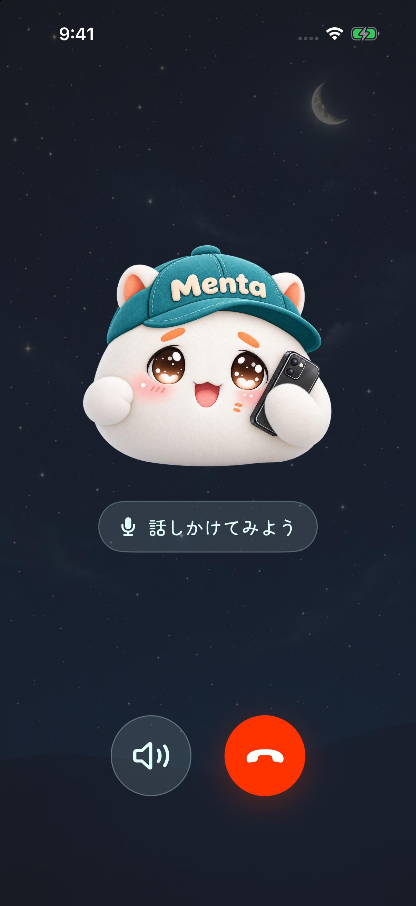
日本語で気軽に相談できるMentaの通話画面。サンプル表示のスクリーンショットです。
04 / ホーム
今日の会話が終わったあとのホーム画面です。朝・昼・夕・夜で背景と時計を合わせています。
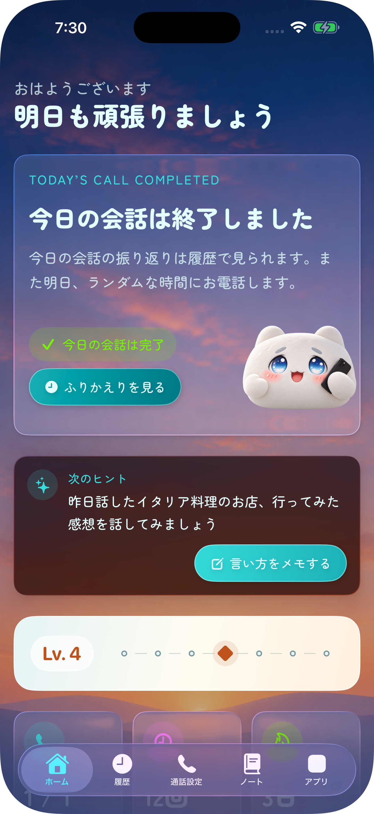
やわらかな朝の光。朝の習慣を紹介する投稿に。
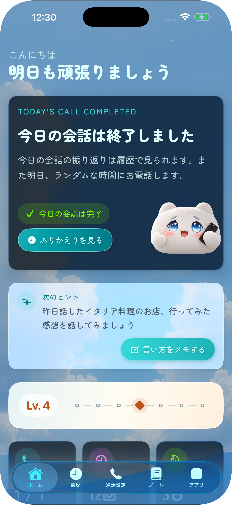
明るい昼の背景。日常のスキマ時間を伝える投稿に。
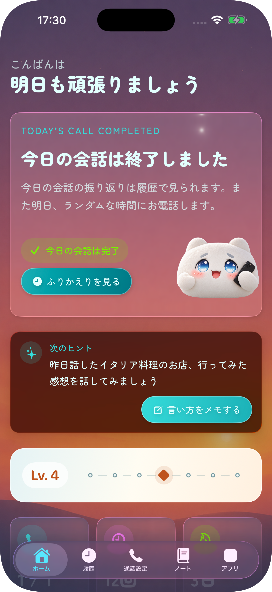
夕暮れの空。1日の終わりのおしゃべりの紹介に。
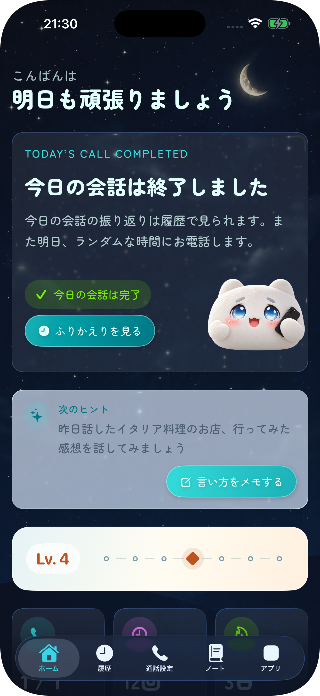
星と月が浮かぶ夜。落ち着いた雰囲気の投稿に。
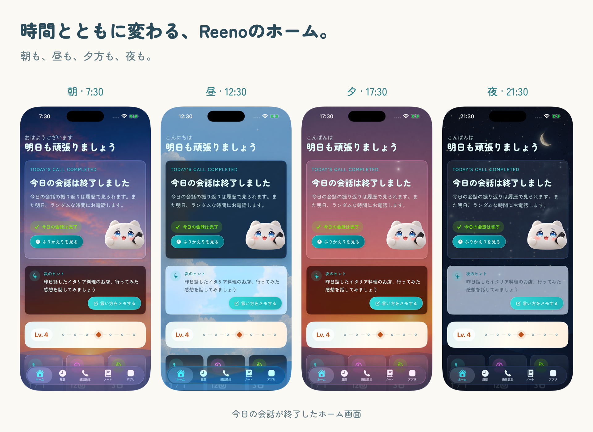
時間帯ごとの違いを、まとめて見せたいときに。
05 / キャラクター
背景が透明なPNGです。写真や動画の上に重ねて使えます。
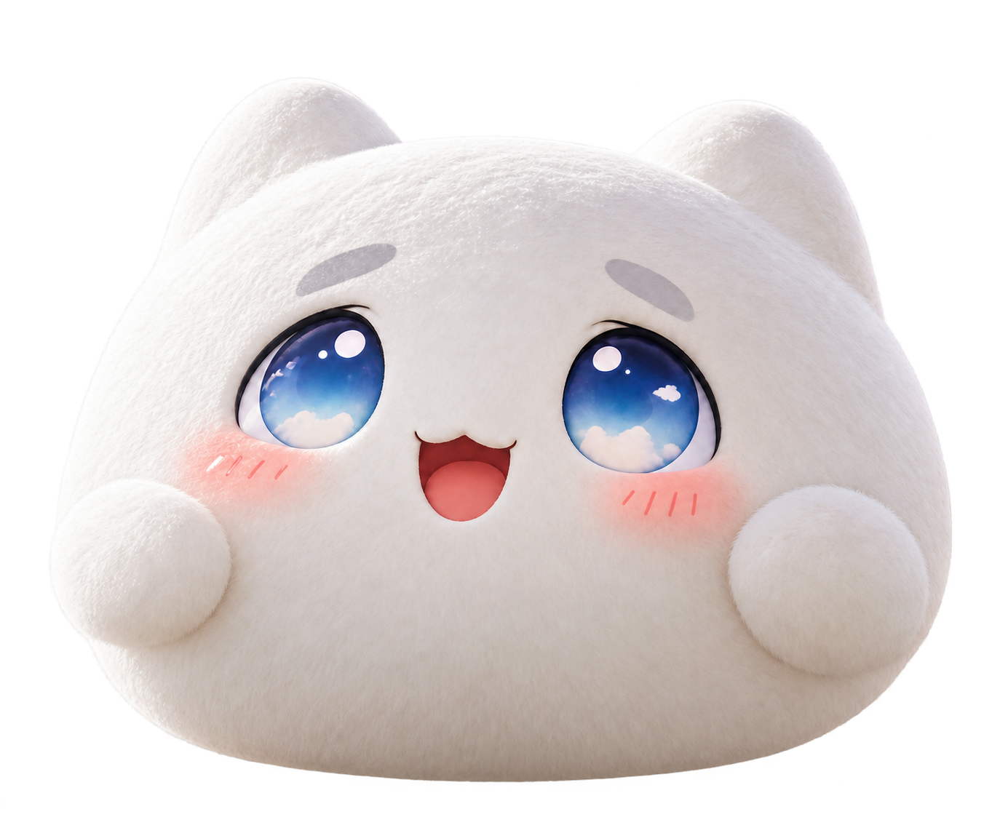
白い毛並みと青い目が目印の、電話の妖精。
電話を持ったReeno。着信や会話の紹介に。
会話のふりかえりやノートの紹介に。
画面の端から、ちょこんとのぞく姿。
新しい話題を探しに行くような、楽しげな姿。
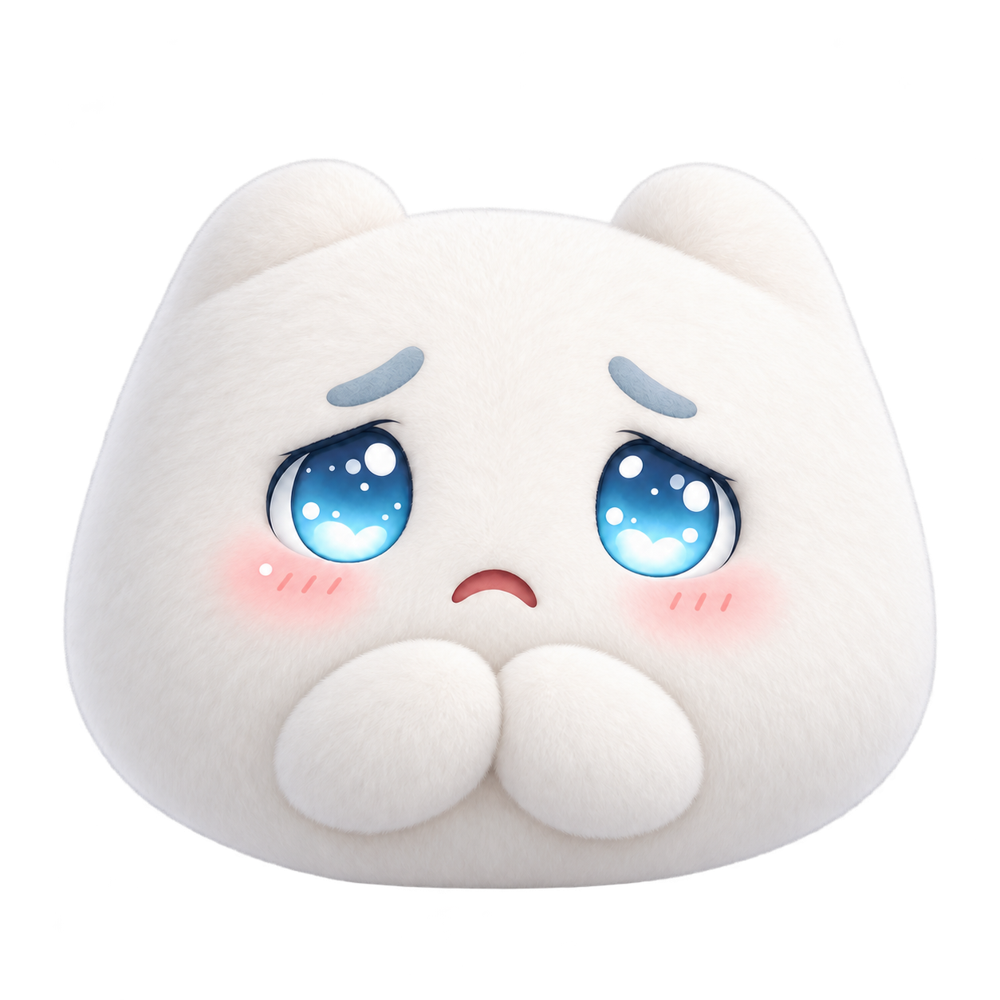
言葉に迷ったときのエピソードにも。
夜の投稿や、1日の締めくくりに。
日本語で相談できる、クリーム色のメンター。
06 / アイコン
Reenoを紹介するときのアプリアイコンです。
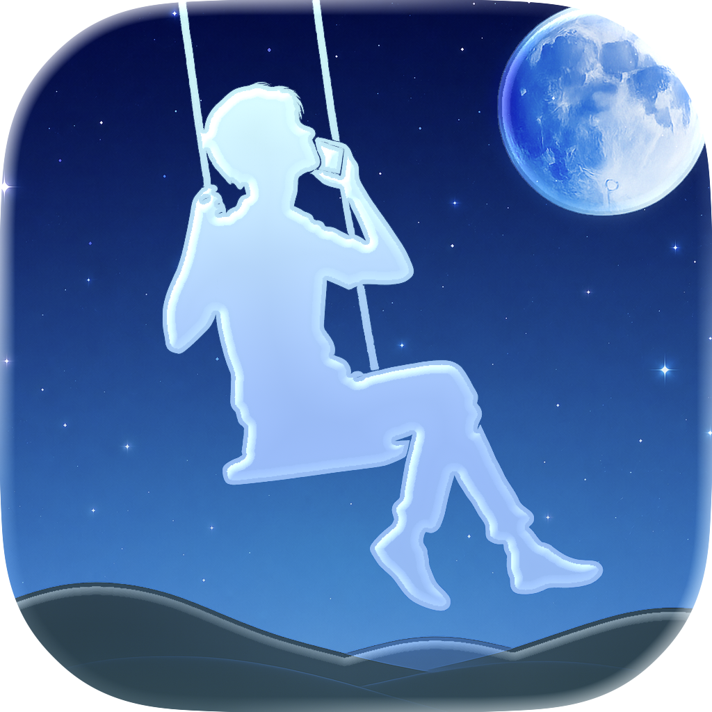
明るい背景のアイコン画像。
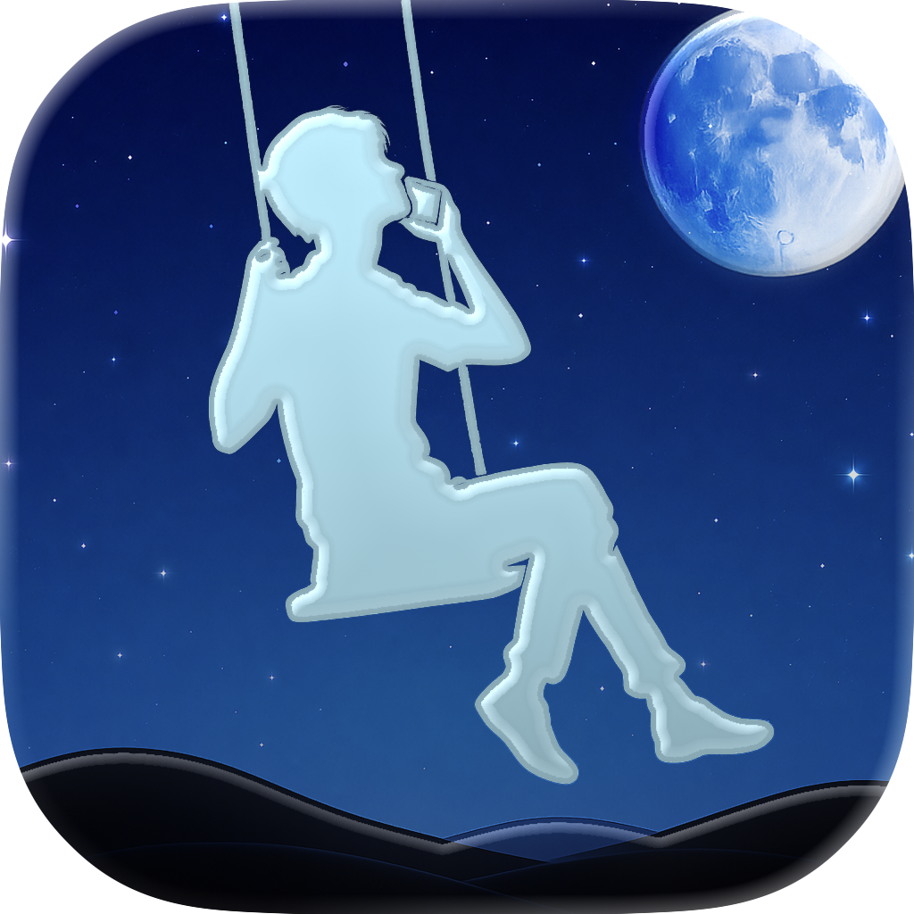
暗い背景のアイコン画像。
07 / ロゴ
背景が透明なPNGです。重ねる写真や背景の色に合わせて選べます。
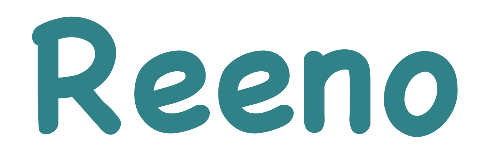
明るい背景に合わせやすい、Reenoのブランドカラー。
白や淡い色の背景に。
暗い背景や写真の上に。プレビューの背景色は画像に含まれません。
はじめての設定から会話のふりかえりまで、画面付きで案内しています。